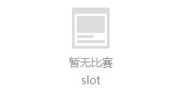
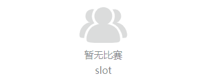

空情况盒子，提供了图标，提示以及slot，默认根据父级盒子居中。
示例
<ly-empty-box imgType="person">slot</ly-empty-box>

<ly-empty-box imgType="person">slot</ly-empty-box>

Props 配置
| 参数 | 说明 | 类型 | 可选值 | 默认值 |
|---|---|---|---|---|
| imgType | 图标类型 | String | page/person | page |
| infoText | 提示文字 | String | 暂无比赛 |
slot
位于提示文字下方